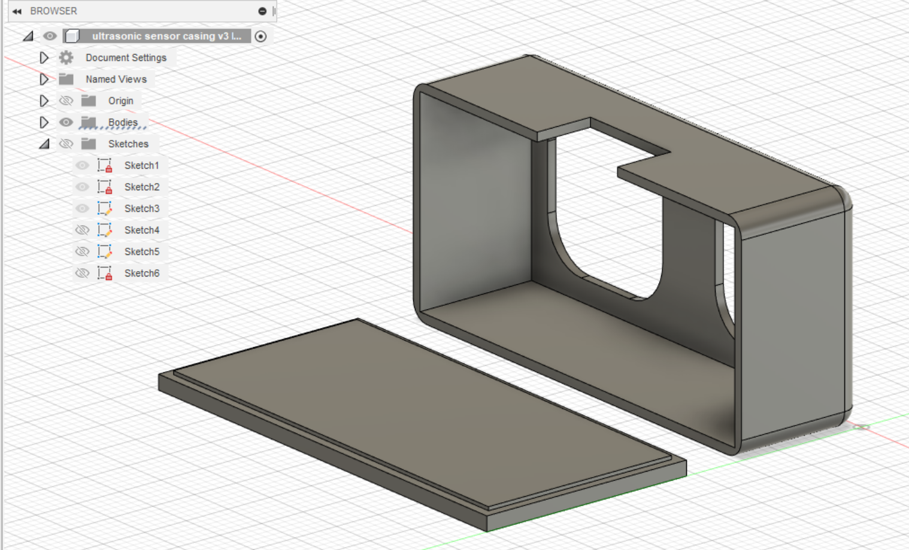
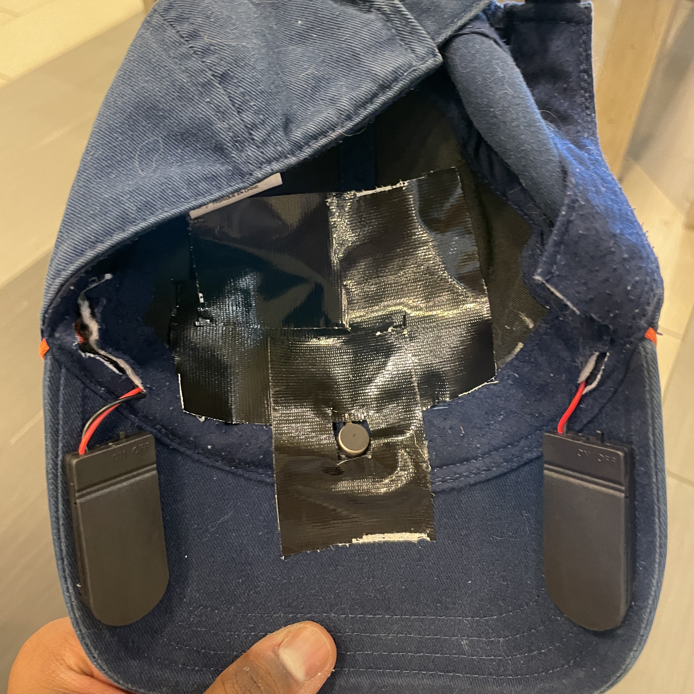

This page shows the documentation of my final project in this module.
Planning Stage
| My project will be a hat that the visually impaired people can use to navigate around simple areas. As of now, they'd be able to navigate around a room with walls etc. It will use an ultrasonic sensor to detect obstructions in the way and a vibration motor built into the cap will notify the user of the obstruction. |
|---|
SKETCH ON PAPER
| Here's the sketch of the finished hat. | Here;s the sketch of the 3d printed and laser cut parts. |
|---|
In these sketches, you can see how all the components will fit within the hat. You can also see in detail how the ultrasonic sensor casing will look as well as how the arduino NANO casing will look.
I plan to hid most of the wires within the cap by adding some holes on the hat.
CARDBOARD PROTOTYPE
| I made the prototype casings for the arduino NANO and the ultrasonic sensor with cardboard. I did so to be able to get accurate measurements for the 3D models that's needed for 3D printing and laser cutting. I did so to ensure that my parts will be able to fit in after fabricating it for the first time. This will allow me to not waste materials. |
|---|
| Front of Arduino NANO case. Notice the hole in the front for the pins to stick out of | Hole on the side of the case for USB |
|---|
 |
You can see how the arduino NANO fits into the case. There is a hole for the wires to exit the case, a hole for the USB, so that the code can be changed without removing the arduino NANO from the case. And lastly another hole for the 6 pins of the arduino to stick out. With the 6 pins sticking out, it allows the arduino to fit into a smaller case. I decided to make the case larger than the size of the arduino NANO so I would not have to damage the pins that I do not need for this project.
| Front of ultrasonic sensor case. Notice the holes for the receiver and transmitter | Hole on the top of the case for wires and pins to stick out |
|---|
You can visualise how the ultrasonic sensor will fit into this case, with the receiver and transmitter being exposed as well as the 4 pins sticking out the top of the case.
ARDUINO CIRCUIT
| Tinkercad did not have an arduino NANO, so I had to create the simulation using the arduino UNO instead. As you can see, I used a 9V battery, a vibration motor, a HC-SR04 ultrasonic sensor and a switch to turn the device on and off. |
|---|
Here's the image of the circuit. I organised the wires nicely in order for the connections to be seen easily as well as for me to be able to have an easier time during the action creation of the circuit.
The batteries are connected to the GND and Vcc pins. The vibration motor is connected to the GND and pin 10.
As for the ultrasonic sensor, Vcc pin is connected to the 5V pin on the arduino. Trig pin is connected to pin 2. Echo is connected to pin 4 on the arduino. And lastly GND is connected to the GND pin on the arduino.
BILL OF MATERIALS
| Here's the summary for all the components I needed for this project. |
|---|
CODING STAGE
Arduino coding steps
1) First, i defined the program by designating each component, the vibration motor and the sensor pins, to a certain pin on the arduino.
2) Then, I declared each Input and Output in void setup.
3) After that, I created a void loop to measure the distance of the receiver and the 'obstruction'. If the safeDistance is over 50, the vibration motor will be on low. But if it's under 50, the vibration motor will be on high.
This will make it so that when the user approaches a wall within 50 units in the code, the vibration motor inside the hat will go off and the user will be alerted of the obstruction.
DESIGN STAGE
Ultrasonic Sensor Case
 |
This is the base sketch for the ultrasonic sensor based off of the measurements of the cardboard prototype.
|  |
I extruded all the 'walls' to be 1mm thick.
I also made the back cover have a thickness in the centre by using the offset tool, so that I can easily snap the back cover onto the front portion of the case before glueing it down.
I filleted the edges and corners and I made sure to rotate the main body of the case to ensure that the holes are at the bottom. This is to minimise supports needed when 3D printing, which will reduce the filament wastage.
Arduino NANO Case
 |
I made a sketch for the front of the case first. Then I extruded it by 2.7mm.
Then I made a sketch of the side and extruded it too
I then used the midplane to mirror and create copies of the front and back. I removed a large portion of the back piece in order to leave a gap for the wires to run through.
Then I made the top and bottom covers for the casing as well as added holes for the USB and for the 6 pins on the arduino NANO.
Once done with the case, I flattened everything out and created a new component. Then I projected the bodies as a sketch onto the new component. Here I was able to then download the DXF file.
FABRICATION STAGE
Laser cut
| Fresh out of the laser cutter | Parts with excess material removed |
|---|
 |
 |
The parts are all glued together with super glue. As you can see, I have a pair of eyes on it to symbolise what my project is trying to accomplish, and of course, the first 3 letters of my name in the 'bauhaus' font.
| Completed arduino casing | Hinge of the case without using any external hinge |
|---|
The laser cut arduino casing was of course test fitted with the arduino NANO to ensure that the microcontroller and the pins can fit snuggly into the case. After doing so, I hot-glued the lid of the case shut, to prevent it from constantly opening and closing.
3D Print
| 3D print with brim | After removing the brim and sanding the print's surface |
|---|
 |
| Test fitting the ultrasonic sensor |
|---|
This is the ultrasonic sensor case. I printed it with a brim in order to easily remove it from the build-plate. After that, I sanded the inside and the outside for the print to look smoother. Finally, I test fitted the ultrasonic sensor, so any resizing and printing can be done on the spot.
Assembly
| I cut holes in the hat to allow the wires to all be hidden within the hat. For the image on the right, i replaced the 9V battery with 4 3V button cell batteries. By doin this, I was able to reduce a bit of the 'bulk' as seen in the image. |
|---|
 |
| Here in the left image, you can see how I hot glued the casings for the 3V button cell batteries to the underside of the hat. On the right, you can see how I hot-glued the arduino NANO case and the ultrasonic sensor case to the hat. |
|---|
| I then tucked all the wires under the flap (circled red) as seen in the image on the left. Then I positioned and glued the vibration motor (circled green) in the front and center of the inside of the hat, so that it will be in contact with the upper part of the user's forehead. |
|---|
 |
| I then stitched the flap over the wires to secure them in place. I also stitched the motor's wires to ensure that they do not interfere with the user. |
|---|
| Lastly, I secured and concealed everything using black cloth tape as seen in the image below. This will prevent the hair from tangling with the wires too. |
|---|
|  |
FINISHED PROJECT
| And now the project is complete! Here's an image of how it will look on a head. On the right, you can see how the batteries are positioned too. All in all, this project was fun to make and was definitely very fulfilling from start to finish:) |
|---|
FILE DOWNLOADS
Click on the links below to download the files
Download DXF File
Download STL File